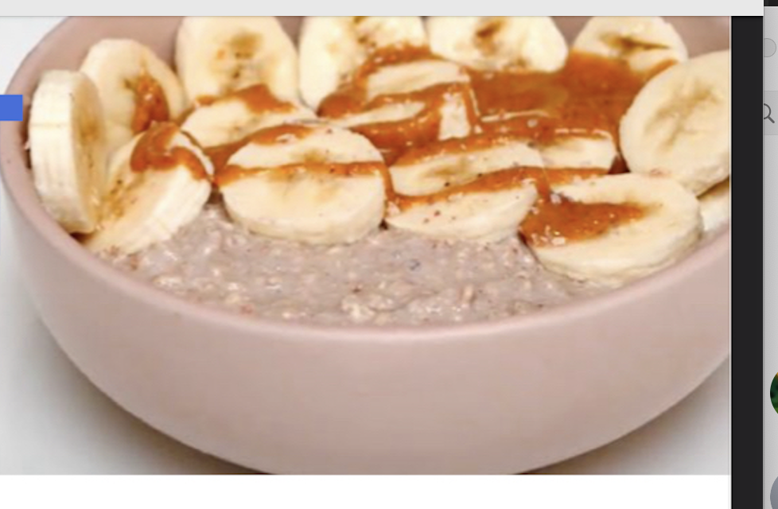

Overnight Oats

Ingredients
- 2/3 cup Oats
- Salt
- 1/2 scoop protein powder
- 3/4 cup greek yogurt
- 1/2 cup milk
- 1 banana
- 1 Tbs Peanut Butter
- 1 Tbs Maple Syrup
Directions
- Combine oats, yogurt, protein powder to tuppy
- Add milk until combined
- Place in fridge for 8 hours min
- Top with banana, peanut butter, and salt and maple